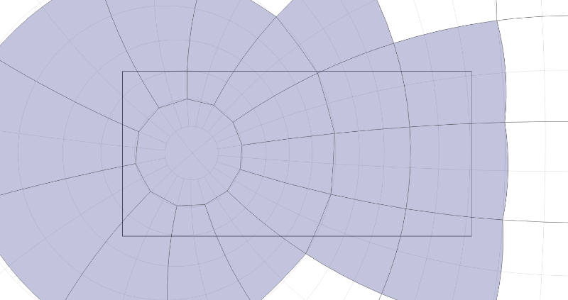

2017-12-14
 Click to launchDisplaying a map of the sky at high resolution requires loading and unloading files corresponding to sections of the sky (tiles). Jason Davies has a very efficient solution with a quadtree, but I think quadtrees would not work near the poles with stereographic projection. So I use a simple algorithm that works with one zoom level only (can probably be extended to 2 or 3). I load a collection of tiles (as JSON objects) that represent the files with detailed star data, and I use use the bounding box of each polygon to determine which one intersect the viewing rectangle.